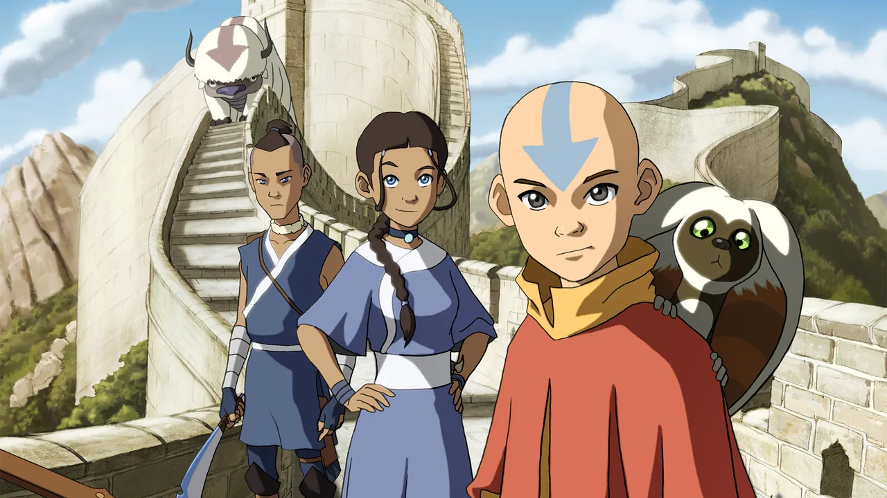
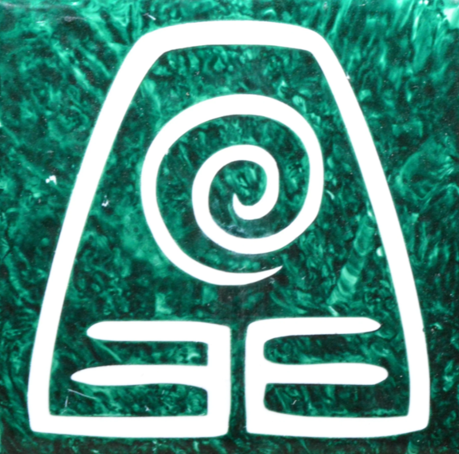
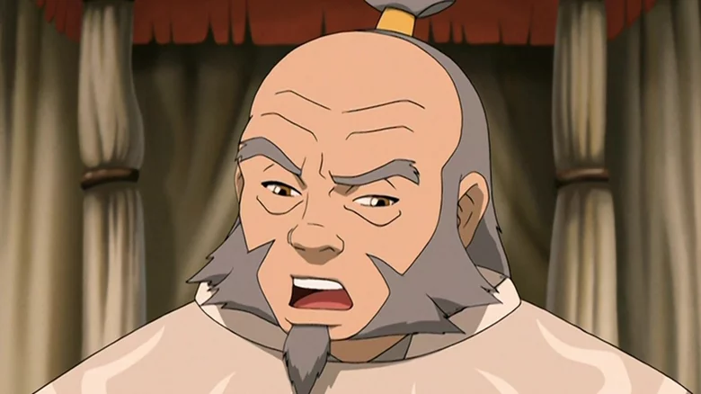

New Opinions on Avatar: The Last Airbender
How I've changed
Since I have never watched Avatar: The Last Airbender, it has grabbed my interest. I don't watch many shows or movies because I am busy. If I try watching the show though, I could probably fit the time in. I could use some break time anyway. I am passionate about the air element and it suits me well. My peer review partner explained some details about the airbenders in the show, and it was helpful information.
My Next Best Choice
If I couldn't choose the air element, I would choose the earth element instead. This is because the earth element seems to be calm, and I am not an argumentative person. Earth is involved with slow but steady problem-solving. In school assignments, I can get caught up on small details for hours. Despite this, I end up creating high-quality work. This could be described as being a perfectionist.
Choosing a Favorite Character
After reading through the descriptions of some characters, I settled upon Uncle Iroh as my favorite character. His appearance first caught my eye because he looked like an old friendly man. Because of his age, I inferred that he is intelligent. To draw a comparison, I also like the black cat from the movie Coraline for the same reason of being old and wise. I like that Uncle Iroh used to be part of the Fire Nation but separated once he realized that they were bad people.
